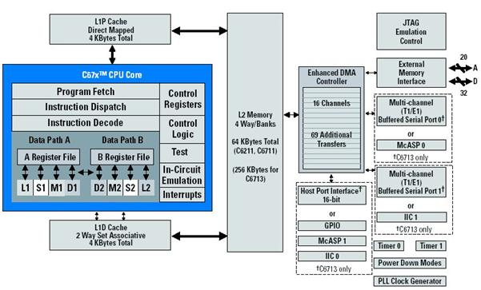
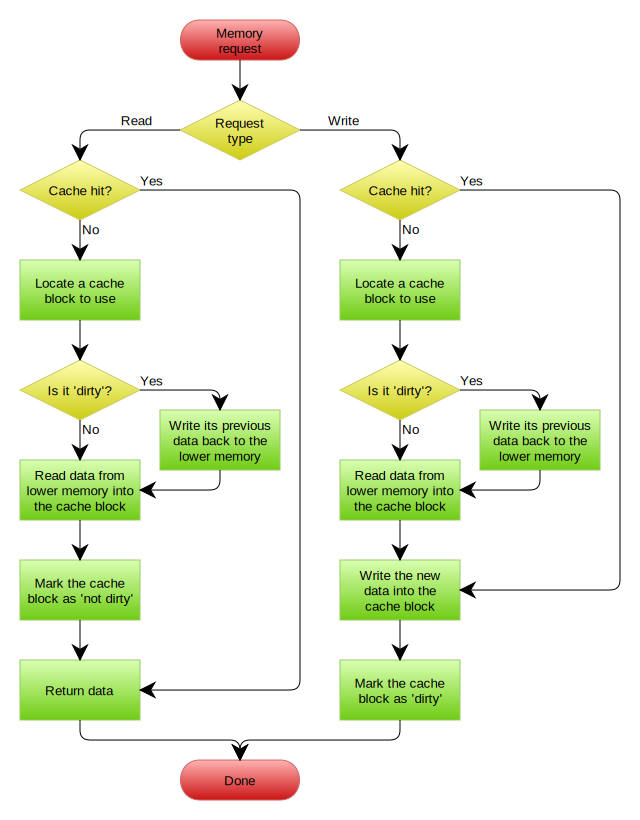
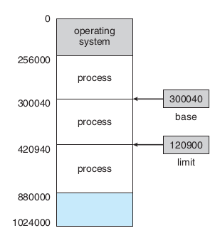

بخشبندی ثابت حافظه

Ahmad Yoosofan
University of Kashan
بخشبندی ثابت حافظه
تخصیص حافظه به فرآیندها در حالت بخشبندی ثابت حافظه

مشکلات بخشبندی ثابت
تکه تکه شدن (پراکندگی) داخلی حافظه
Internal Memory Fragmentation

https://www.geeksforgeeks.org/difference-between-internal-and-external-fragmentation/
بخشبندی پویای حافظه

حافظهٔ فرآیندها در سیستم عامل CTSS

اثر به کارگیری حافظهٔ پویا


چگونگی کارکرد پیوند زدن تابعها از پروندههای گوناگون


برگزیدن فضای آزاد برای فرآیند تازه وارد

تکه تکه شدن (پراکندگی یا پارگی) خارجی

حافظهٔ پویای رفاقتی Buddy system


الگوریتم اجرا

جابجا کردن فرآیند میان حافظهٔاصلی و حافظهٔ جانبی (دیسک)، شکل سادهای از حافظهٔ مجازی


سلسله مراتب حافظه

سلسله مراتب حافظه جزئیتر

حافظهٔ نهان

حافظهٔ نهان دو سطحی در یک پردازندهٔ واقعی
الگوریتم خواندن و نوشتن از حافظهٔ نهان
اگر ضریب اصابت (یا نسبت اصابت) برای پردازندهای 0.95 باشد و سرعت دسترسی به حافظهٔ اصلی 100 میکرو ثانیه باشد و سرعت دسترسی حافظهٔ نهان 1 میکرو ثانیه باشد در این صورت زمان دسترسی مؤثر برابر خواهد بود با

| ms | μs | ns | action |
| 0.5 | CPU L1 dCACHE reference | ||
| 1 | speed-of-light (a photon) travel a 1 ft (30.5cm) distance | ||
| 5 | CPU L1 iCACHE Branch mispredict | ||
| 7 | CPU L2 CACHE reference | ||
| 71 | CPU cross-QPI/NUMA best case on XEON E5-46 | ||
| 100 | MUTEX lock/unlock | ||
| 100 | own DDR MEMORY reference | ||
| 20 | 000 | Send 2K bytes over 1 Gbps NETWORK | |
| 250 | 000 | Read 1 MB sequentially from MEMORY | |
| 10 | 000 | 000 | DISK seek |
| 10 | 000 | 000 | Read 1 MB sequentially from NETWORK |
| 30 | 000 | 000 | Read 1 MB sequentially from DISK |
| 150 | 000 | 000 | Send a NETWORK packet CA -> Netherlands |
به کارگیری حافظهٔ نسبی برای نگهداری مکان چندین فرآیند در حافظه

بخشهای درونی یک فرآیند در حالت کلی

مشخص شدن آدرسهای حافظهٔ فرآیند

address binding, loader

address binding, linker


END
{kind=link}
{kind=link}
{kind=link}
{kind=link}
{kind=link}
{kind=link}